브랜드
유한양행의 다양한 브랜드를 소개해 드립니다.
-
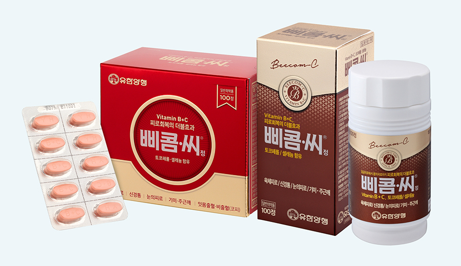
국민영양제 삐콤씨
삐콤씨는 1963년 출시되어 지금까지 국민영양제로 사랑받고 있습니다.
1960년대 가난과 영양결핍으로 많은 사람들이 비타민B 결핍증에 시달리고 있을 때 서민들이 양질의 비타민을 부담없는 가격에 복용할 수 있도록 출시한 것이 삐콤정이었습니다.삐콤정은 출시 24년만인 1987년에 현재의 삐콤씨로 이름을 바꾸고 성분과 함량을 한층 업그레이드 했습니다. 그리고 1997년 엽산과 철분을 보강한 삐콤씨 에프, 2004년에는 UDCA(우루소데스옥시콜린산), 항산화제인 셀루늄과 아연을 보강한 삐콤씨에이스를 출시했습니다.
2012년에는 여성에게 필요한 성분을 보강한 삐콤씨 이브와 비타민E와 셀레늄을 보강해 25년만에 리뉴얼한 삐콤씨, 2017년에는 활성형비타민을 함유하고 있는 삐콤씨액티브정을 출시했습니다.
또한, 2019년에는 비타민 B, C 복합제인 삐콤씨에 비타민 B군 중 B1, B2, B6 등 흡수율이 높은 활성비타민과 한국인에게 부족한 비타민 D와 비타민 E 함량이 증가된 삐콤씨 파워정을 출시했습니다.
제품 정보 더보기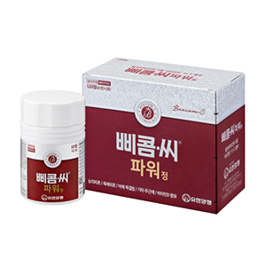 < 삐콤씨정 >- 효능 및 효과
- 비타민B1(티아민질산염) - 신경통, 근육통, 관절통(요(허리)통, 어깨결림 등),각기 ·눈의피로
- 비타민B2(리보플라빈) - 각염(입꼬리염), 구순염(입술염), 구내염(입안염), 설염(혀염), 습진부, 피염
- 비타민C(아스코르브산과립 97%) - 햇빛·피부병 등에 의한 색소침착(기미, 주근깨)의 완화,잇몸출혈·비출혈(코피) 예방
-
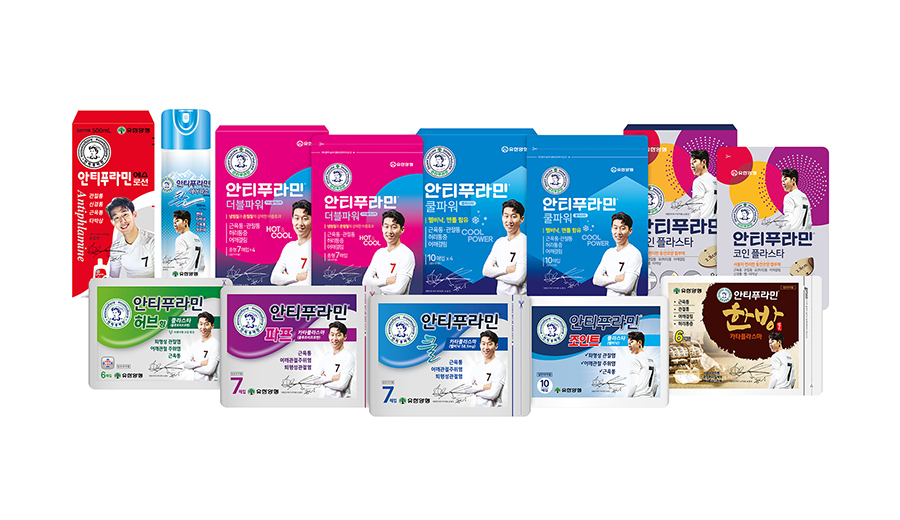
가정상비약 안티푸라민
서민들의 비상상비약으로 사랑받아온 안티푸라민은 알루미늄 통에 수줍게 웃고 있는 간호사 그림만큼 정겨운 제품입니다.안티푸라민은 1933년 유한양행 창업자 유일한 박사의 부인인 의사출신 호미리 여사의 도움으로 유한양행이 자체 개발한 의약품 1호입니다.
그 브랜드 이름은 반대라는 이름의 안티(무시)에 ‘불태우다, 염증을 일으키다’는 뜻의 인플레임(inflame)을 합친 말로 과장없이 ‘항염증제’, ‘진통소염제’라는 제품 특성을 설명한 브랜드 이름입니다. 안티푸라민은 멘톨, 캄파 등으로 소염진통작용, 혈관확장작용, 가려움증 개선작용 등을 나타내고 바세린 성분으로 보습효과도 보입니다.
1933년 연고형태에서 출시되어 1999년에는 로션형태로,
제품 정보 더보기
2010년에는 파프제품을 선보이며 고객에게 다가가고 있습니다. 현재는 연고, S로션, 5종의 파프와 쿨에어파스까지 선보이며 명실상부한 안티푸라민 패밀리’를 구성하고 있습니다.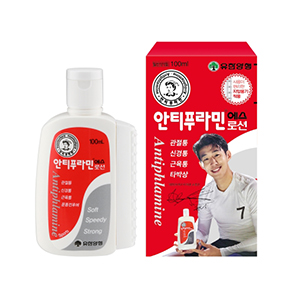 < 안티푸라민로션 >- 효능 및 효과
- 다음 증상의 진통•소염(항염) - 삠, 타박상, 근육통, 관절통, 골(뼈)절통, 요(허리)통,어깨결림, 신경통, 류마티스통증
- - 피부가려움, 벌레물린데
- - 동창(언 상처)
-
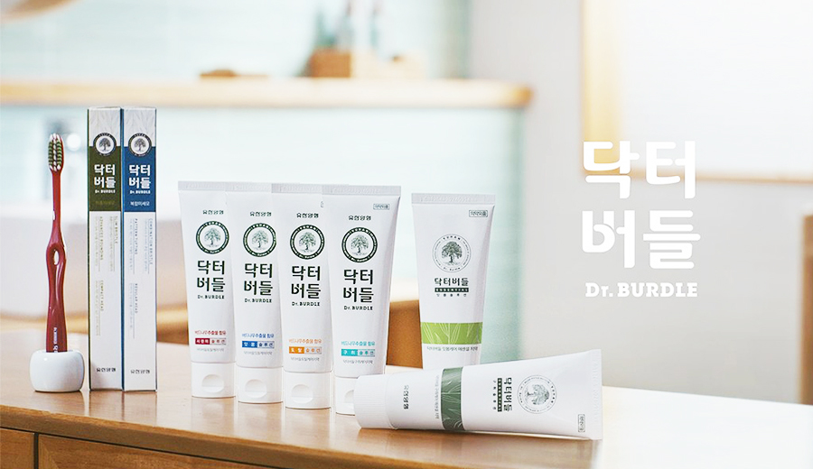
믿음까지 치약이 되다, 버드나무 치약 닥터버들
우리 치아를 건강하게 지켜주는 양치질은 버드나무에서 시작되었습니다. 옛 조상들은 버드나무의 가지를 잘라 이쑤시개처럼 만들어 이를 청소했는데, 버드나무 가지를 뜻하는 '양지(楊枝)'가 오늘날에 와서 '양치'로 불리게 되었습니다.
고대 그리스의 의성 히포크라테스는 환자의 염증을 완화하기 위해 버드나무를 사용했으며 허준의 동의보감에도 치통을 바로 잡기 위해 버드나무 가지를 달인 물로 양치하는 것에 대한 기록이 있습니다.
1925년, 서재필 박사는 고국에 돌아가려는 유일한 박사에게 버드나무가 그려진 목각화 한장을 내주었고 이는 1926년 설립된 유한양행의 상징으로 신뢰와 믿음의 이름이 되었습니다. 버드나무의 헤리티지와 유한양행의 믿음을 담은 치약을 닥터버들에서 만나보세요.
제품 정보 더보기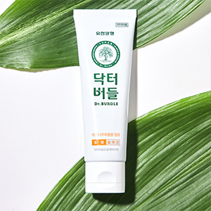 < 닥터버들 토탈 솔루션 >- 효능 및 효과
- 버드나무 추출물 함유 - 천연유래 흰버드나무껍질 추출물
- 토탈 기능 치약 - 충치예방 및 구취제거, 잇몸질환 및 치석침착 예방
- - 염화나트륨, 덴탈타입실리카, 플루오르화나트륨,피로인산나트륨 함유
- 천연유래 계면활성제 - 팜오일에서 유래된 음이온 계면활성제
-
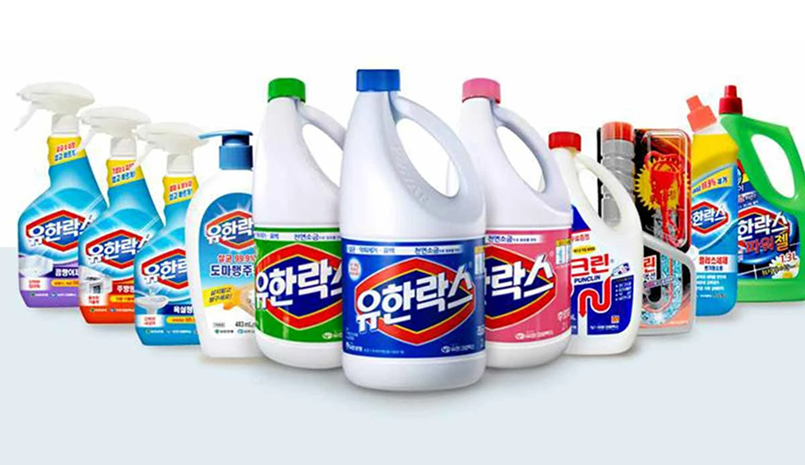
대한민국 대표 표백제
유한락스는 1975년 출시되어 국민보건위생에 크게 기여하고 있는 브랜드입니다. 1976년 식품의약품안전처로부터 식품첨가물로 허가를 득하였고, 1989년 배수관세정제 ‘유한펑크린’, 1999년 유한락스플러스세제, 2004~2005년 유한락스 곰팡제제거제, 욕실청소용, 도마행주용 등 주거세정제를 추가로 출시한 바 있습니다.
최근에는 집안 위생을 넘어 의류의 살균표백까지 담당하는 산소계표백제 ‘유한젠’을 출시하여 브랜드 카테고리를 확장하고 있습니다. 우리가 생활하는 환경 곳곳에 소비자에게 편리하고 도움을 주는 브랜드 ‘유한락스’ 입니다.
제품 정보 더보기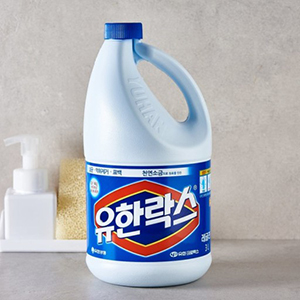 < 유한락스 >- 주의사항
- * 반드시 용법대로 희석하여 사용하고, 충분한 환기상태에서 고무장갑을 착용하고 사용하십시오
- * 안전캡은 아래로 누른 상태에서 시계반대방향으로 돌리면 열립니다
- * 원액을 삼키면 위험하므로 직접 섭취하거나 음용하지 마십시오
- * 산성세정제나 합성세제, 산소계표백제 등과 혼합하여 사용하지 마십시오
- * 색상이 있는 의류에는 탈색되므로 사용하지 마시고, 흰색의류라도 염소계 표백제 사용가능 여부를 확인 후 사용해야 합니다
- * 수지가공 된 의류(와이셔츠, 블라우스 등)는 겉으로 잘 보이지 않는 부분에 시험해 보아 황색으로 변하지 않으면 사용하십시오
-
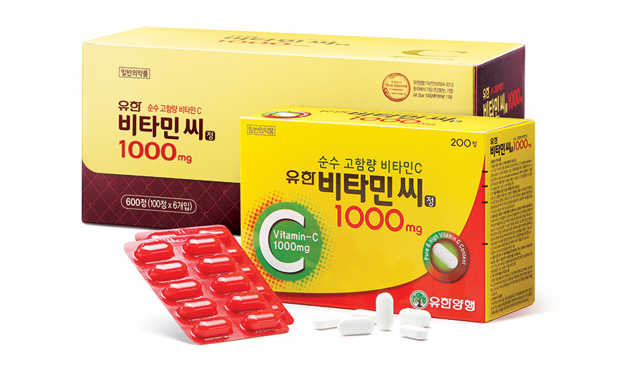
유한양행을 대표하는 순수 고함량 비타민c 제품
우리 몸에 필요한 비타민의 종류는 많지만, 그 중 비타민의 왕이라 불리는 것이 ‘비타민C’입니다. 최근 피로회복과 노화 및 피부미용에도 효과가 있다고 알려지면서 가장 인기 있는 비타민으로 각광받고 있습니다.
2001년 출시된 유한비타민씨1000mg은 유한양행을 대표하는 비타민씨 제품입니다. 고함량 비타민C를 필요로 하는 고객들을 위해 하루 한 정으로 1000mg를 섭취할 수 있도록 출시했습니다.
습기에 약한 비타민C 제품을 위해 일반 PVC보다 방습효과가 5배나 높은 PVDC 포장을 사용하여 방습효과를 높이고 제품 안정성을 강화시켰습니다. 그리고 100정씩 6개의 소포장으로 구성되어 있어 보관 편의성도 높였습니다.
제품 정보 더보기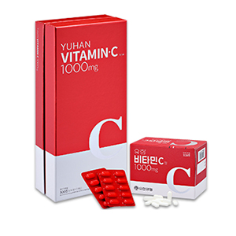 < 비타민씨 >- 효능 및 효과
- 다음 경우의 비타민C,D의 보급 - 육체피로,임신•수유기,병중•병후(병을 앓는 동안이나 회복 후)의 체력 저하시,발육기,노년기
- - 비타민C(아스코르브산과립97%):햇빛•피부병 등에 의한 색소침착(기미,주근깨)의 완화,잇몸출혈•비출혈(코피)예방
- - 비타민D(농축콜레칼시페롤산):뼈,이의 발육불량,구루병의 예방
-
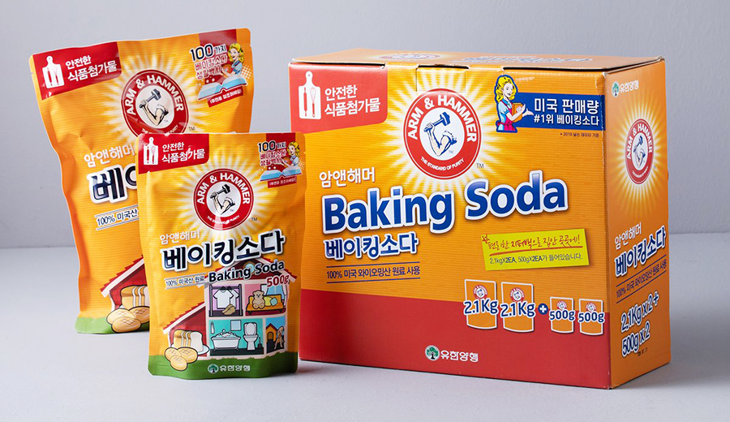
자연과 환경을 생각하는 환경친화 암앤해머
암앤해머는 탁월한 세정 및 탈취효과를 자랑하는 천연 미네랄 베이킹소다를 주원료로 치약, 세척제, 탈취제 등환경과 인체에 전혀 해가 없는 생활용품을 만들어온 환경친화 브랜드입니다.
암앤해머는 미국의 10대 브랜드에 포함되는 상표로 미국을 대표하는 상품 중 하나입니다. 1846년 처치 앤 드와이트(Church & Dwight)사에서 판매를시작한 이래 자연과 환경을 생각하는 브랜드 철학을 지니고 있으며,
친환경적인 제품이 아니면 같은 회사에서 나오는 제품이라도 암앤해머 로고가 부착될 수 없는 깨끗함의 상징(standard of purity)처럼 여겨지고 있습니다. 암앤해머 제품은 유한양행이 2003년 여름부터 국내에서 판매를 시작하였습니다.
제품 정보 더보기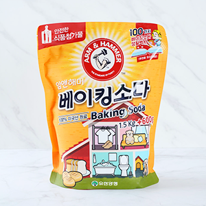 < 암앤해머 베이킹소다 >- 다양한 활용법
- - 욕실 청소
- - 섬유 및 반려동물 냄새 탈취
- - 쿠키 및 제빵
- - 의류, 신발 냄새 제거
- 주의사항
- - 용도 외에는 사용하지 마세요.
- - 내용물이 눈이나 피부에 닿으면 깨끗한 물로 씻고 이상이 있을 경우 의사와 상의하세요.
-
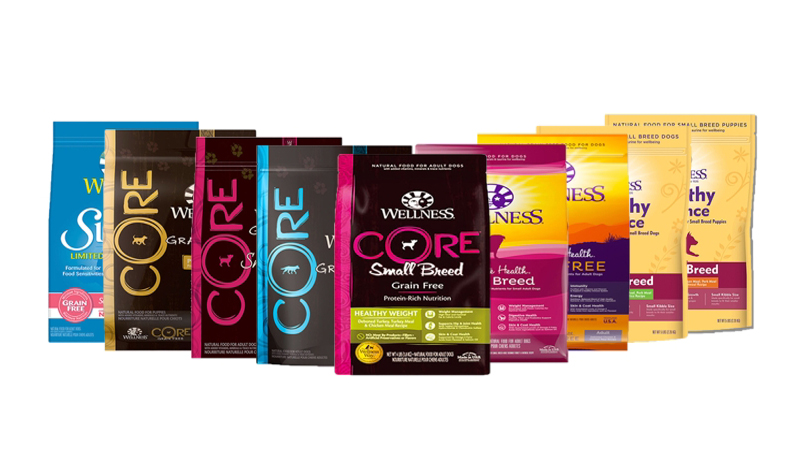
고품격 내추럴 펫푸드
1926년 미국 Old Mother Hubbard라는 회사에서 시작된 고품격 내추럴 펫푸드 브랜드 '웰니스' 사료를 2013년 창립 동갑내기인 유한양행에서 론칭했습니다.
모든 제품에 GMO, 육류 부산물, 콩, 밀, 옥수수를 사용하지 않고 더불어 인공 보존제, 인공 향미제, 인공 착색제를 사용하지 않는 것을 제 1원칙으로 하는 웰니스는 미국 현지 권위있는 펫 푸드 분석 사이트에서 항상 최고 등급에 랭크되는 고품질의 사료입니다.
웰니스의 모든 제품은 육류 위주의 사료로 제1원료는 언제나 신선한 육류이어야 한다는 생각과 풍부한 통과일과 야채, 피부건강을 위한 오메가 3, 6 지방산, 천연 과일과 야채에서 얻어지는 항산화제, 슈퍼 영양소(비타민, 미네랄, 프리바이오틱스, 프로바이오틱스등)를 사용한 반려동물 전용의 고품격 사료입니다.
웰니스 사료는 언제나 신선하고 안전한 펫푸드를 공급하기 위해 미국 인디애나주 Mishawaka지역의 자체 생산 공장에서 엄격한 품질관리를 통해 생산 공급하고 있습니다. Made in Wellness의 자부심과 깐깐함으로 만들어진 내추럴 펫푸드를 만나보세요.
제품 정보 더보기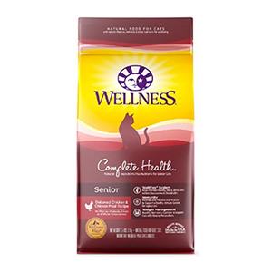 < 컴플리트 헬스 시니어 >- 제품특징
- - 노령견을 위한 맞춤 설계
- - 뼈를 발라낸 닭고기와 현미, 오트밀
- - 저지방(10% 이상), 저칼로리
- - 관절건강 및 체중 관리(글루코사민, 콘드로이틴)
- - 살아 있는 4가지 유산균(ActiCoatTM)
- - 풍부한 천연 오메가 지방산과 항산화제(WellCoat®)
- - 고기 부산물, 콩, 옥수수, 밀, 인공 착색제, 향미제, 보존제 무첨가
- - 통곡물, 통과일과 야채
- - 340 kcal/cup(3,220Kcal/kg)